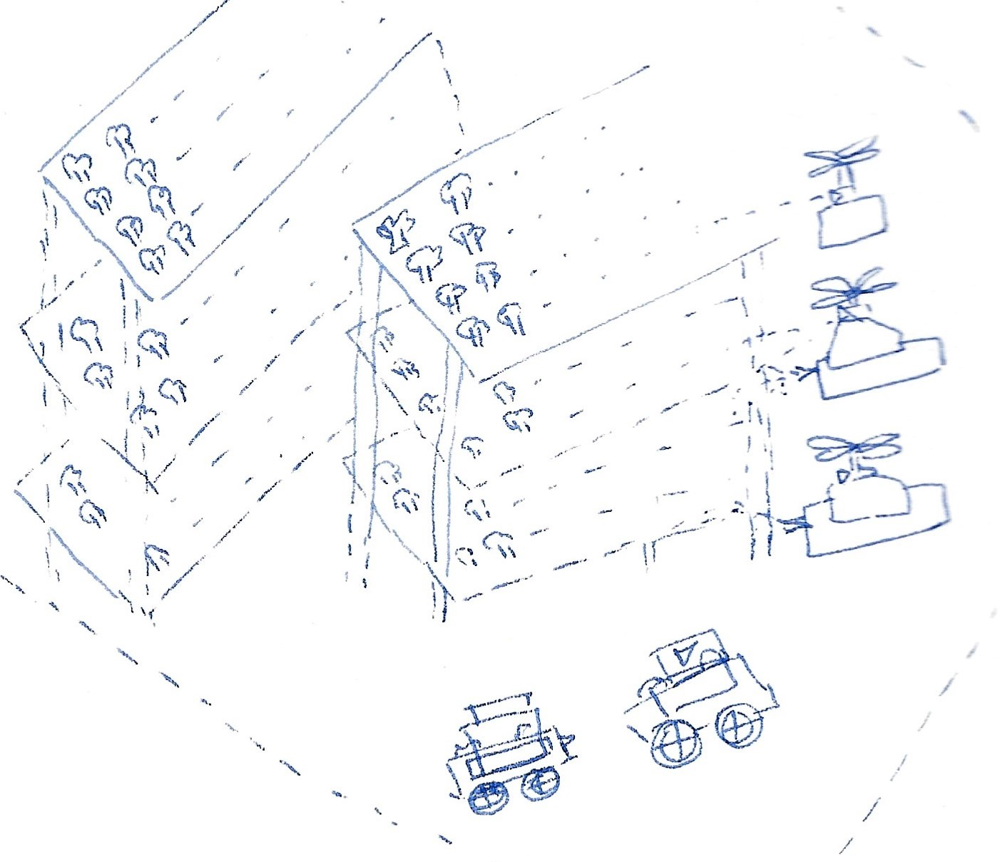

Goal :
Increase Habitable Mars Days for Human Exploration
Purpose :
Why Bhoomi - Day 2 for Mars.
Bhoomi is an Autonomous Habitat designed for long term exploration on Mars. It consists of a swarm robotics platform to build Habitats.
Bhoomi can be visualised as Internation Space Station on Mars, but designed with robots and human to complement work and exploration
Robots would set up the entire system, growing food and maintaining the habitat before the first astronauts arrive at Mars.
Each robot in the swarm is independent and completes functional requirements autonomously.
Robots will be sent earlier than Humans due to low-cost Rockets compared to human-rated systems.
